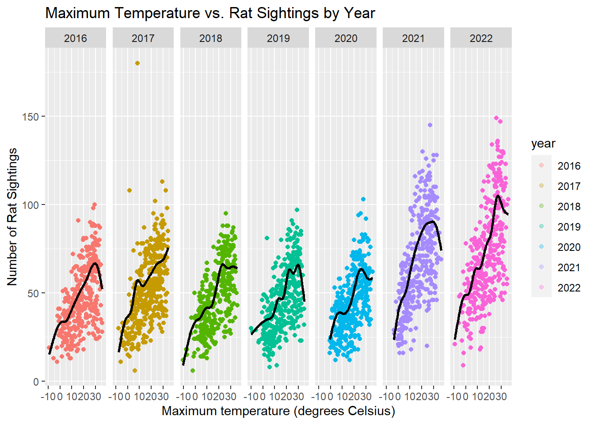

Data Visualization
Below are highlights of our analyses and include what we believe to be our most important data plots:
sightings = read_csv('data/NYC_Rat_Sightings.csv') |>
janitor::clean_names() |>
separate(created_date, into=c("month","e", "day","f", "year", "g", "time"), sep=c(2,3,5,6,10,11)) |>
select(-e,-f,-g) |>
mutate(date = paste(year, month, day, sep=""),
date = as.numeric(date)) |>
filter(date <= 20231031,
date >= 20160101,
!incident_zip <= 10000,
!incident_zip > 11697,
!borough %in% c("Unspecified", NA)) |>
select(-agency, -agency_name, -complaint_type, -descriptor, -landmark, -facility_type, -park_facility_name, -vehicle_type, -taxi_company_borough, -taxi_pick_up_location, -bridge_highway_name, -road_ramp, -bridge_highway_segment, -bridge_highway_direction) |> select(unique_key, date, year, month, day, everything())## Warning: One or more parsing issues, call `problems()` on your data frame for details,
## e.g.:
## dat <- vroom(...)
## problems(dat)## Rows: 232143 Columns: 38
## ── Column specification ────────────────────────────────────────────────────────
## Delimiter: ","
## chr (25): Created Date, Closed Date, Agency, Agency Name, Complaint Type, De...
## dbl (6): Unique Key, Incident Zip, X Coordinate (State Plane), Y Coordinate...
## lgl (7): Vehicle Type, Taxi Company Borough, Taxi Pick Up Location, Bridge ...
##
## ℹ Use `spec()` to retrieve the full column specification for this data.
## ℹ Specify the column types or set `show_col_types = FALSE` to quiet this message.weather_df = rnoaa::meteo_pull_monitors(
c("USW00094728"),
var = c("PRCP", "TMIN", "TMAX"),
date_min = "2016-01-01",
date_max = "2022-12-31") |>
mutate(
name = recode(id, USW00094728 = "CentralPark_NY"),
tmin = tmin / 10,
tmax = tmax / 10) |>
select(name, id, everything())## Registered S3 method overwritten by 'hoardr':
## method from
## print.cache_info httr## using cached file: /Users/lizbekerman/Library/Caches/org.R-project.R/R/rnoaa/noaa_ghcnd/USW00094728.dly## date created (size, mb): 2023-12-02 11:00:44.015667 (8.544)## file min/max dates: 1869-01-01 / 2023-11-30sightings$date <- as.Date(as.character(sightings$date), format = "%Y%m%d")
rat_weather =
right_join(sightings, weather_df, by="date")Overall rat sightings trends:
rat_weather |>
mutate(year = as.factor(year)) |>
group_by(date) |>
summarize(count = n(), year) |>
ggplot(aes(x = date, y = count, color=year)) +
geom_point(alpha = 0.25) +
labs(title = "Time Series: Rat Sightings Over Time",
x = "Date",
y = "Number of Rat Sightings")## Warning: Returning more (or less) than 1 row per `summarise()` group was deprecated in
## dplyr 1.1.0.
## ℹ Please use `reframe()` instead.
## ℹ When switching from `summarise()` to `reframe()`, remember that `reframe()`
## always returns an ungrouped data frame and adjust accordingly.
## Call `lifecycle::last_lifecycle_warnings()` to see where this warning was
## generated.## `summarise()` has grouped output by 'date'. You can override using the
## `.groups` argument.
# total count per year by borough - most in brooklyn and manhattan
sightings |>
group_by(year, borough) |>
summarize(count=n()) |>
plot_ly(x=~year, y=~count, color=~borough, type="scatter", mode="line")## `summarise()` has grouped output by 'year'. You can override using the
## `.groups` argument.Rat sightings & Weather
rat_weather |>
group_by(date) |>
summarize(count = n(), year, tmax) |>
ggplot(aes(x = tmax, y = count, color = year)) +
geom_point(alpha = .3) +
geom_smooth(se = FALSE, color="black") +
facet_grid(. ~ year) +
labs(title = "Maximum Temperature vs. Rat Sightings by Year",
x = "Maximum temperature (degrees Celsius)",
y = "Number of Rat Sightings")## Warning: Returning more (or less) than 1 row per `summarise()` group was deprecated in
## dplyr 1.1.0.
## ℹ Please use `reframe()` instead.
## ℹ When switching from `summarise()` to `reframe()`, remember that `reframe()`
## always returns an ungrouped data frame and adjust accordingly.
## Call `lifecycle::last_lifecycle_warnings()` to see where this warning was
## generated.## `summarise()` has grouped output by 'date'. You can override using the
## `.groups` argument.
## `geom_smooth()` using method = 'gam' and formula = 'y ~ s(x, bs = "cs")'
Rat sightings & Trash
Rat sightings & Restaurants
#Importing NYC Restaurant Inspections csv
inspections_df = read_csv("./data/NYC_Restaurant_Inspections.csv") |>
janitor::clean_names() |>
separate(inspection_date, c("Month", "Day", "Year"), sep = "/") |>
select(-Day) |> #can remove other columns as needed
filter(as.numeric(Year) > 2015)## Warning: One or more parsing issues, call `problems()` on your data frame for details,
## e.g.:
## dat <- vroom(...)
## problems(dat)## Rows: 209461 Columns: 27
## ── Column specification ────────────────────────────────────────────────────────
## Delimiter: ","
## chr (16): DBA, BORO, BUILDING, STREET, PHONE, CUISINE DESCRIPTION, INSPECTIO...
## dbl (10): CAMIS, ZIPCODE, SCORE, Latitude, Longitude, Community Board, Counc...
## lgl (1): Location Point1
##
## ℹ Use `spec()` to retrieve the full column specification for this data.
## ℹ Specify the column types or set `show_col_types = FALSE` to quiet this message.#Observations of violations
violations_plot_df <- inspections_df |>
group_by(Year, boro, violation_code) |>
mutate(code_obs = n())#Plotting 04K violations by cuisine type
violations_plot_df |>
filter(violation_code == "04K") |>
group_by(cuisine_description) |>
mutate(cuisine_obs = n()) |>
filter(cuisine_obs > 25) |>
ggplot(aes(x = reorder(cuisine_description, cuisine_obs),
y = cuisine_obs)) +
geom_point(aes(color = cuisine_description)) +
theme(axis.text.x = element_text(angle = 40, hjust = 1)) +
labs(title = "Top 20 Rat Violation Offenders by Cuisine Type 2016-2023") +
theme(legend.position = 'none') +
xlab("Cuisine Type") +
ylab("Number of Rat Violations") +
scale_y_continuous(breaks = c(50, 100, 150, 200, 250, 300))
Rat sightings & SES factors